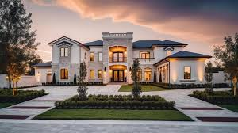
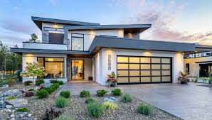
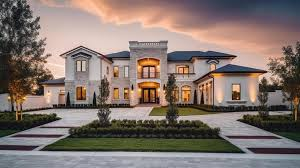
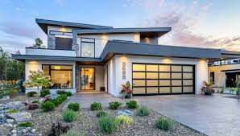
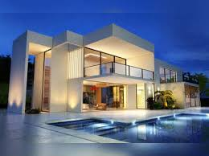
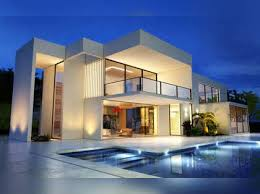
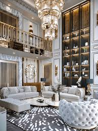
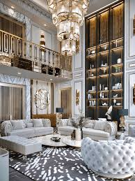

A house is a structure designed for people to live in, typically providing shelter and personal space. Houses come in various shapes and sizes, depending on the location, cultural practices, and individual needs.
They are usually built with materials like wood, brick, stone, or concrete, and are divided into different rooms such as bedrooms, kitchens, bathrooms, and living areas. The design of a house often reflects its occupants' lifestyles and preferences, with some focusing on functionality, while others emphasize luxury and comfort.
Over time, houses have evolved to include modern conveniences such as electricity, plumbing, and heating systems, enhancing the quality of life for those living in them.
Our house is a place of comfort and warmth, where every corner holds a memory. The walls are painted with love, and the rooms are filled with laughter. It's a place where we gather, sharing meals and stories, and where we retreat for rest and solitude.
The backyard is a small oasis, with blooming flowers in the spring and the scent of freshly cut grass in the summer. Each piece of furniture tells a story of its own, carefully chosen and placed with care. In our house, we find peace, joy, and the sense of being truly at home.
 




 

.png) 
